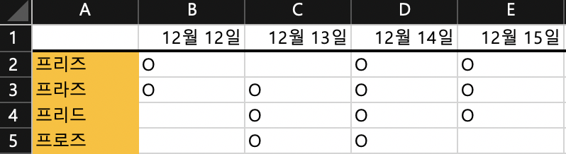
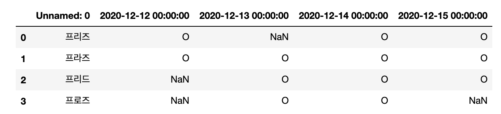

本ポストは MacOS 10.15.6を基で作成いたしました。
開発をしながら僕はエクセルファイルを直接読み込んで、その中のデータを分析、出力する作業を担当したことがありました。直接Pythonを使用しながらエクセルファイルを読み込んでるのは可能でしたが、実際にデータ化するのに困りがありました。特に、データ関連はPandasのDataframeに備えてることがあるので、１々データを読み込んでリスト化した後それをDataFrameかする面倒な作業が連発されていました。
それを無視して、一発でデータフレーム化する方法がありました。それがPandasの機能の一つのread_excelっという機能であります。直接的にファイルパスだけを入力し、パラメータに求めるデータを入力すると自動でエクセルのデータたちがデータフレーム化するのを確認することができます。それで、僕はそれを見つけた後からエクセルファイルを呼ぶ昨日はすべてread_excelを使用しています。
それでは、使用方法と簡単な機能を紹介させて頂きたいと思います。
必要なライブラリ
pandas==1.1.0 # read_excelを含むライブラリ
numpy==1.19.2 # データの数値化
使用環境ツール
Jupyter notebook
Read_excelを読み込む
read_excelはPandasから簡単に読み込むのが出来まるので、基本的な内容は公式サイトに記載されています。
公式サイト pandas.read_excel
例のエクセルファイル（韓国語で記載されています。） 
簡単な行と列でデータフレーム化が化膿するように出席確認用データで作成してみました。この同時にJupyter Notebookで作成して数値を読み出すようにしました。
1
2
3
4
5
6
7
8
# import list
import os
import numpy as np
import pandas as pd
from IPython import display
pd.options.display.max_rows = 999 # データフレーム最大表示列数を999に指定
pd.set_option('display.max_columns',999) # データフレーム最大表示行数を999に指定
ファイルを読み込むosとnumpy,pandasをインポートさせて、下の２つのオプションをデータフレームに省略される列と行を全部見せるコードであります。結構有用に使えました。
1
2
3
4
# get excel data to dataframe
file_name = 'excel_file.xlsx'
df = pd.read_excel(file_name)
display(df)
Output : 
このようにデータフレームすることが可能であります。僕はこんな便利なデータフレームにはまってよく使っていました。さらに、read_excelには他の引数が存在し、求めるヘッダを名で指定するのが可能であり、どこまで読み込まれるのかが可能であります。
Read_excelの応用
今回の応用にはread_excelの中の引数を直接使用して、データフレームを楽に使えるようにしてみます。今回の応用からは下のエクセルファイルを利用して利用されて頂きます。
例のエクセルファイル（韓国語で記載されています。）

header
headerは該当の列のパスを調整して、該当の名前をheaderのデータに指定することが可能であります。ただし、headerの上のデータはすべて除外されていますのでご注意をお願い致します。
1
2
3
4
# get excel data to dataframe from 7 rows to header
file_name = 'excel_file.xlsx'
df = pd.read_excel(file_name, header=7)
display(df)
Output : 
index_col
Index_colは行の何番目をデータフレームのインデックスに指定することが可能であります。上のデータフレームはインデックスが指定されていませんでしたので、0,1,2,3で指定されていましたが、index_colを使用すると該当の行のデータがインデックス数値になれます。
例のエクセルファイルをそのまま続き、今度はデータフレームからインデックスを”사원명”で指定させて頂きます。
1
2
3
4
# get excel data to dataframe and set index from A column
file_name = 'excel_file.xlsx'
df = pd.read_excel(file_name, header=7, index_col=0)
display(df)
Output : 
これで、各データフレームのインデックスが”사원명”のデータに指定されていました。これでデータフレームの任意の社員データを確認することが可能であるし、インデックスを活用できるデータを使用できます。
Usecols
Usecolsはエクセルファイルの特定の行だけをデータに出力したい時に使える引数であります。例えば、上の例のA行の名前と12月27,31日分だけの出力を求められると、該当の行のアルファベットを入力するば簡単であります。
上のエクセルファイルを続き、12月27,31日だけ出力させて頂きます。
1
2
3
4
# get excel data to dataframe from A, D, E columns
file_name = 'excel_file.xlsx'
df = pd.read_excel(file_name, header=7, index_col=0, usecols='A,D:E')
display(df)
Output : 
keep_default_na
Keep_default_naはエクセルのセルが空白の場合、自動でNaNを指定するかないかを設定することであります。デフォルトはTrueになっていてましたので今までの空白の出力NaNで指定されているはずでした。しかし、こんなNaN数値を欲しくなければ、Falseで指定して、空白の出力を文字列の空白に出力することが可能であります。
上の例のエクセルファイルのNaNデータを全部空白文字列を切り替えてみました。
1
2
3
4
# get excel data to dataframe
file_name = 'excel_file.xlsx'
df = pd.read_excel(file_name, header=7, index_col=0, keep_default_na=False)
display(df)
Output :